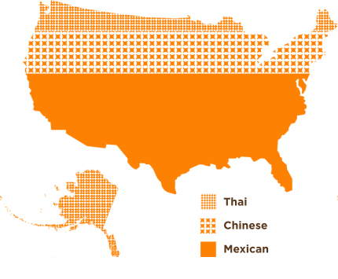
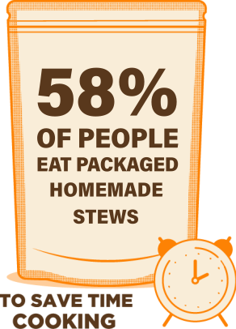

Isadora®, the #1 Brand of beans in a pouch that has revolutionized the demanding taste of thousands of Mexicans, is now introducing in the United States a complete portfolio of ready-to-eat Mexican Food, a solution to consumers looking for tasty, unique Mexican flavors and convenience products that are FULLY COOKED & DON'T NEED REFRIGERATION.
MEXICAN CUISINE LEADING TREND IN THE U.S
Mexican cuisine reigns as the most popular ethnic cuisine in 27 states.


56%
WEEKDAYS
AT
DINNERTIME
40%
ON THE
WEEKEND

Quality Ingredients
We use the highest QUALITY INGREDIENTS FROM MÉXICO in every pouch to cook THE TASTIEST, FRESHLY MADE MEXICAN FOOD WITHOUT PRESERVATIVES thanks to our MULTI-LAYERED BPA-FREE POUCH that ensure superior safety and FRESHNESS FOR UP TO 18 MONTHS.